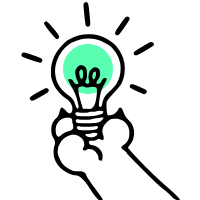

已完成整理。本周共发现 18 条履约异常，其中 5 条需要优先处理，主要集中在配送超时和商家出餐延迟。

把好用的 Prompt 和能力组合保存下来，下次直接开始。
当前为交互原型：能力和资料以名称引用写入输入框，不会自动安装或绑定；资料引用只在本机保存，分享时不会导出。请在保存及分享前核对 Prompt、来源文件名和引用内容。
你只需判断哪种做法值得留下，不用挑选对话。先审阅草稿，确认后才保存。
交互演示 · 以下草稿基于本任务的示例对话预置，不代表已自动复盘真实会话。
请检查推断、一次性信息及敏感内容。只保存上面的文字，不保存原对话、产物文件或资料；Skill 不会凭这次对话自动生成。
仅改变信息展示层级，不影响 Agent 的执行能力或访问权限。
正在查找门店
正在核对周末营业时间